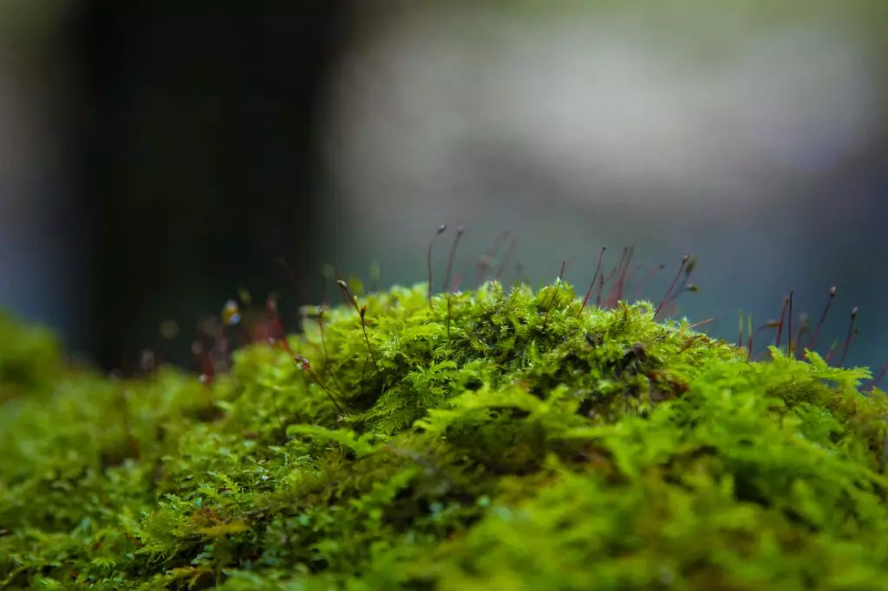

Aprender como cultivar musgo pode ser um jeito de adicionar uma cor extra no seu jardim, além de ser potencialmente benéfico para o resto da vegetação presente. Essa briófita, além de bonita em suas saturações principalmente verdes, são essenciais na criação de novos ecossistemas, ajudando a estabilizar solos prejudicados, retendo a água e possibilitando o crescimento de outras plantas.
Por outro lado, o seu uso ornamental também pode ser interessante ao seu jardim. Usado como decoração de pedras ou cultivado em torno de outras plantas, o musgo oferece, para quem o admira, uma sensação de tranquilidade e equilíbrio ao jardim.
O musgo é classificado como uma briófita, ou seja, uma planta não-vascular sem um sistema de raízes. Em vez de sementes, ele libera esporos que contribuem para o seu crescimento e proliferação.
Embora seja considerado uma planta, o musgo não possui uma estrutura similar a maioria das plantas. Desse modo, ele não tem folhas, ramos ou raízes, e sim rizoides. Algumas espécies de musgos, por exemplo, usam essas estruturas similares a fios de cabelo para absorver umidade e os nutrientes que precisam, enquanto outras espécies atraem água através de suas superfícies.
Diferentemente do que muitos pensam, o musgo não é uma planta invasiva, e sim oportunista. Isso significa que, quando se encontra em ambientes ideais para o seu crescimento, pode se proliferar rapidamente.
Em casos onde a proliferação de musgo no seu jardim vira um problema, é necessário investigar a causa para que o fenômeno tenha ocorrido. Na maioria das vezes, o musgo tende a crescer em áreas onde o solo foi comprometido, seja compactado, com falta de absorção ou solos que ficam molhados por muito tempo.
O seu controle pode ser feito de forma manual, onde o musgo é retirado com a ajuda de um ancinho e o solo é recuperado através do cuidado necessário. Nos jardins, não existe um método de controle ou retirada da briófita com uso de produtos químicos que não prejudicam outras plantas. Portanto, o melhor é o uso da técnica anterior.
- Umidade: o musgo prefere locais úmidos, mas não molhados, para crescer;
- Sombra: grande parte das espécies de musgo preferem a sombra, uma vez que locais sem a constante incidência do Sol são mais úmidos;
- Solo ácido: preferencialmente com o pH de 5,5;
- Solo compactado: embora possa crescer na maioria dos solos, ele prefere o solo compactado.
O jeito mais fácil de aprender como cultivar musgo no solo é usando o musgo já presente em outros lugares. A planta pode ser colhida com permissão e responsabilidade de áreas que já a mantém ou pode ser comprada.
O melhor método para esse “transplante” é feito durante a primavera ou outono, durante a época de chuva. Para plantá-lo eficientemente, você só precisa colocar o pedaço de musgo onde quiser que ele cresça.
Se quiser cobrir uma área grande, espalhe pequenos pedaços intercalados do musgo na área desejada.
Após a plantação, mantenha a área regando-a constantemente, para evitar que a planta morra.